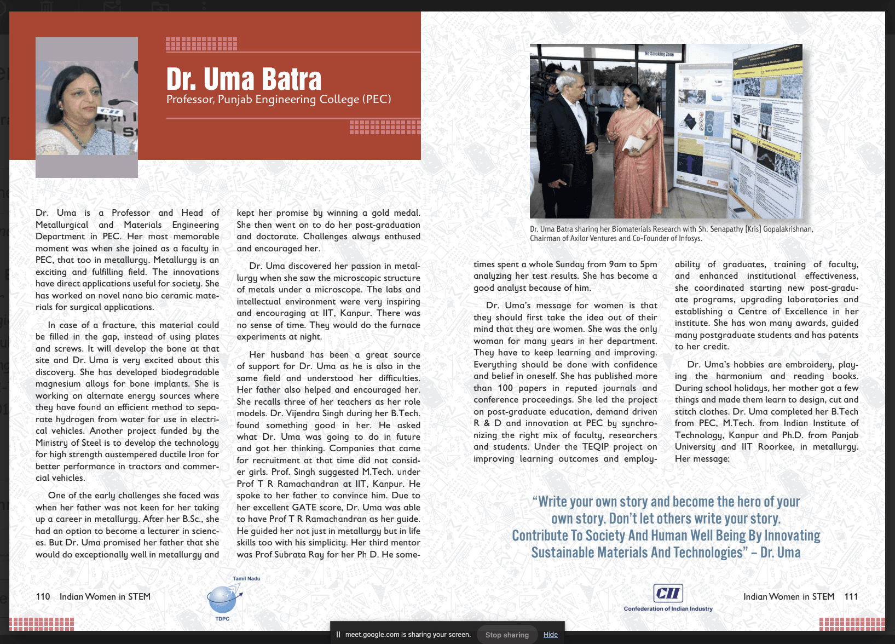

Writer · Professor · Metallurgist
A life spent studying what makes things strong.
Professor Uma Batra is the author of The Bhagavad Gita for Effortless Understanding, published by the esteemed Motilal Banarsidass. She has authored more than a hundred research publications across biomaterials, magnesium alloys, and austempered ductile iron.
She holds five patents in bone grafting and metallurgy, serves as a trusted metallurgical consultant to industry, and is Professor & Head of Metallurgical & Materials Engineering as well as Dean Faculty Affairs at Punjab Engineering College.

“Just as metals require precise annealing to relieve internal stress and tempering to prevent brittleness, human minds require structural frameworks to navigate the intense loads of modern life.”
Four decades of teaching, research, and life mentorship distilled into The Human Quests.
The Foundation
From Kaithal to the classroom and laboratory.
Born in Kaithal, Haryana and raised in Chandigarh, India, Uma Batra graduated from Punjab Engineering College before completing her Master’s in Technology in Metallurgical Engineering at the Indian Institute of Technology, Kanpur, followed by a PhD in Metallurgy.
Today, she balances teaching, research, administration, and consultancy—bringing an unusually broad perspective to the work of materials, people, and institutions.
A living archive of a 40-year legacy.
The Human Quests brings these insights to a global audience through a weekly newsletter at the intersection of hard science and spiritual wisdom. Each edition carries one Gita Insight, one Engineering Reflection, and one Mental Lens—practical tools for dissolving confusion and building structural resilience.
“Tempering Metal. Refining Minds.”